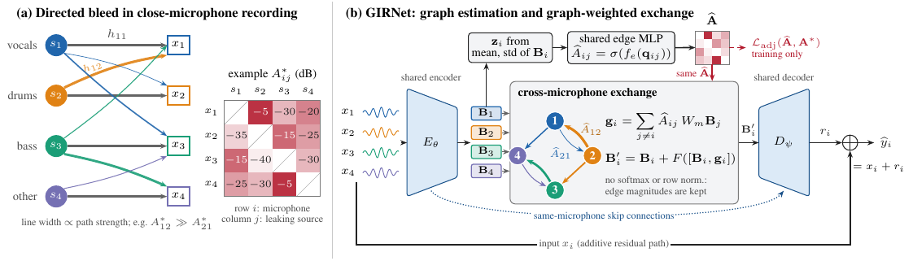
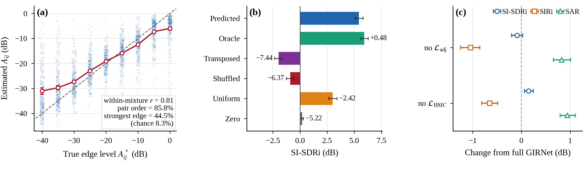
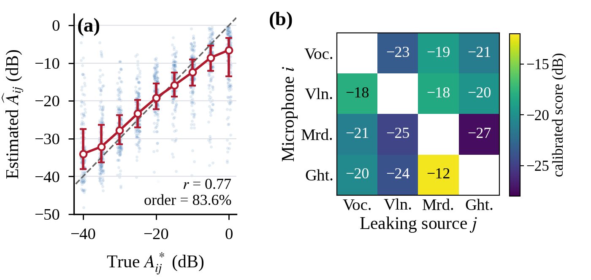

Direction matters
Transposing the oracle graph changes only edge direction and lowers SI-SDRi by 7.437 dB relative to the predicted graph. Shuffling directed edge identities lowers it by 6.366 dB.
IEEE Signal Processing Letters · supplementary material
GIRNet estimates which source leaks into which close microphone and uses the same directed edges to control the separator.
Method
For edge j→i, the model estimates the relative acoustic path from source j into microphone i. Those unnormalized edge values are both reported as the bleed graph and used to weight cross-microphone bottleneck messages.
The output is an additive waveform correction. Source order is fixed; no permutation-invariant training is used.

Controlled evidence

Transposing the oracle graph changes only edge direction and lowers SI-SDRi by 7.437 dB relative to the predicted graph. Shuffling directed edge identities lowers it by 6.366 dB.
Removing adjacency supervision leaves SI-SDRi statistically unresolved but reduces graph correlation from 0.810 to 0.587 and doubles edge MAE.
The graph reliably orders paths, but its dB range is compressed. Estimated scores are not precision acoustic transfer measurements.
External validation
Leave-one-performance-out Sanidha adaptation reaches 8.421 dB SI-SDRi and retains graph correlation 0.771. On reference-free Saraga concerts, the calibrated graph exposes stable asymmetric structure, with mridangam→ghatam the strongest population-median direction.
Saraga quantities are model-derived relative descriptors, not measured contamination percentages.

Audio demonstrations
Reference-free Saraga examples compare the recorded microphone signal with the GIRNet output. Because isolated ground truth is unavailable, these clips support listening and qualitative inspection only.
The current implementation assumes four ordered microphones and segment-constant paths. HTDemucs remains the strongest aggregate separator; GIRNet's contribution is the task-coupled directed bleed estimate and the ability to intervene on it.